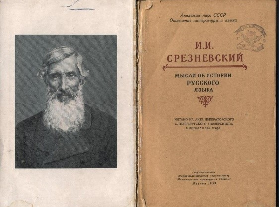
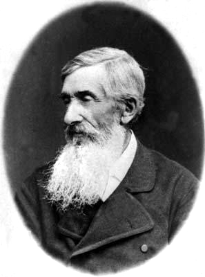
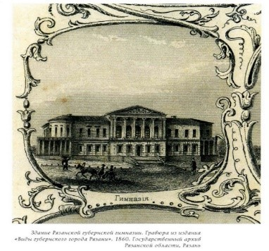
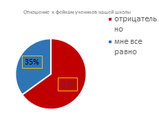
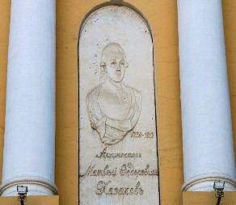
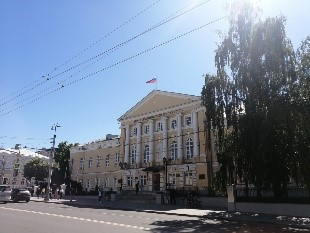
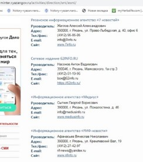
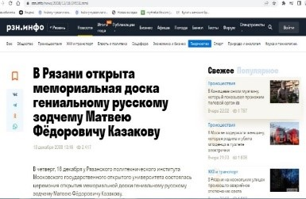
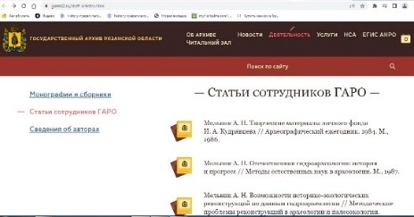
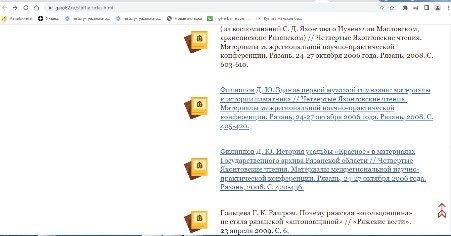

Мы дети своего родного города
И каждый переулок мил и дорог нам…
Песня про Рязань


ВНУКИ СРЕЗНЕВСКОГО
ВНУКИ СРЕЗНЕВСКОГО
КТО МЫ? ГДЕ МЫ?
Мы из Рязани, города с удивательной историей, уникальной архитектурой, интересными людьми. Мы дети своего времени, поэтому не мыслим себя без средств коммуникации к которым относятся все медиасредства. Общение не возможно без знаний основ руссого языка. И.И. Срезневский великий филолог, составитель «Словаря древне русского языка» родился в Ярославле, но его род, это старейший род рязанских священнослуждителей. «По отцу и деду я рязанец»,-говорил Срезневский. Он любил Рязань и завещал похоронить себя на Рязанской земле. Его воля была выполнена.Сегодня в Рязани и в селе Срезнего есть музеи Срезневского. Срезневский посвятил свою жизнь сохранению правдивой информации об основах нашего языка, он боролся за его сохранение, им написано много работ в области филологии. Срезневский сохранял историю нашего языка, мы же хотим сохранить историю нашего города.

Наша цель:
Создать подкаст для школьного радио с рассказом о тайне здания бывшей 1-ой мужской гимназии г. Рязани

ХОТИМ ПРИВЛЕЧЬ ВНИМАНИЕ К ЗАГАДКЕ СТАРОГО ДОМА (ул. Ленина д.53)
НАШЕ МНЕНИЕ: КАЗАКОВ НЕ МОГ ЯВЛЯТЬСЯ АРХИТЕКТОРОМ ЭТОГО ДОМА
Исследование сайта госархива показали архитектор старого дома Никифор Милюнов. Мы столкнулись с ФЕЙКОМ!
ОПРОС!!!! 900 учеников (4-7 классов)
Фейки становится большой проблемой. Также мы считаем, что важно уважать свою историю, принимать ошибки, которые были в нашем прошлом, стараться их анализировать и стараться их не совершать в будущем, также не стоит забывать и о хороших страницах нашей истории, нужно уважать свое прошлое, нужно им гордиться. Мы отказались от идеи каста, мы будем делать подкаст. Мы будем говорить об истории нашего края, а часть посвятим проблеме фейков
Задачи:
- просмотреть рязанские электронные средства массовой информации («РЗН инфо», «7 новостей», «МедиаРязань» и т.д.) с целью опеределить какую информацию они дают о здании бывшей 1-ой мужской гимназии и что пишут о человеке, по проекту которого построено это здание;
- познакомиться с публикациями в Интернете на интересующую нас тему;
- обратиться к информации Государственного архива Рязанской области;
- познакомиться с биографией Казакова, с фотографиями зданий, архитектором которых он был;
- познакомиться с открытками с фотографиями Рязани конца XIX- начала XX века;
- познакомились с циклом передач «Родом из детства», детскими передачами «Клуб знаменитых капитанов», «Радионяня», подобрать музыку для каста





